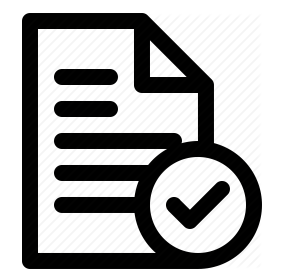

<!--
  Generated template for the AdminDashboardPage page.

  See http://ionicframework.com/docs/components/#navigation for more info on
  Ionic pages and navigation.
-->

<header-component (onClick)="goToHome($event)" [label]="label"></header-component>

<ion-content padding>
<section>
  <div class="container" (click)="acceptComplaint($event)">
    <div class="box">
    
    <label>Accpet complaint</label>
    </div>
  </div>
  <hr>
  <div class="container" (click)="previousComplaint()">
      <div class="box">
      
      <label>View previous complaint</label>
      </div>
  </div>

</section>
</ion-content>
